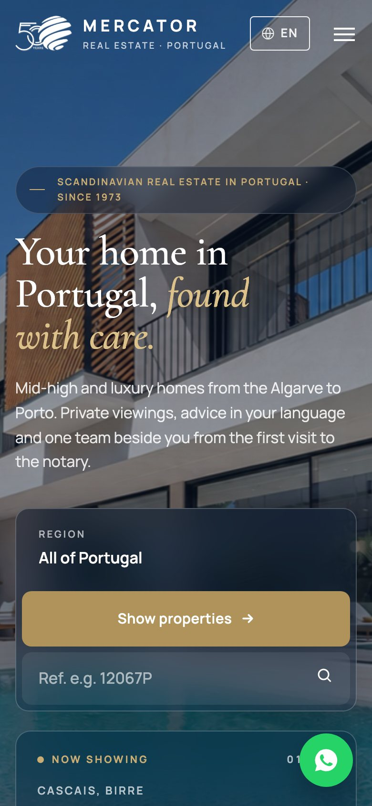

mercator.pt


02 / 07
Mercator
Real estate · PortugalImobiliária · PortugalEjendomsmægler · PortugalRedesignRedesignRedesignA real-estate site in six languages with the agency's real listings, search by region and reference, and a WhatsApp line to the team.Site imobiliário em seis línguas com os imóveis reais da agência, pesquisa por região e referência, e linha direta por WhatsApp.En ejendomsmæglerside på seks sprog med mæglerens rigtige boliger, søgning efter region og reference og en direkte WhatsApp-linje til teamet.
6 languages6 línguas6 sprogLive listingsImóveis reaisRigtige boligerSearchPesquisaSøgningWhatsAppWhatsAppWhatsApp
Visit the siteVisitar o siteBesøg hjemmesiden ↗